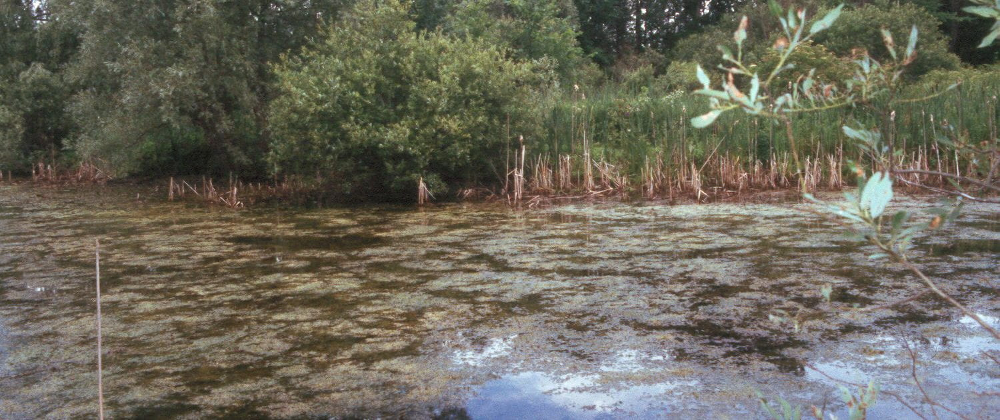

Work Term 1 - Leo Bantolino
Introduction
During this work term, I worked under Dr. Prasad Daggupati, who leads the Watershed Research Group at the School of Engineering, University of Guelph. I was primarily a full-stack developer, where I was heavily involved in rebuilding the backend infrastructure of our application. Additionally, I contributed to developing new UI features and fixing critical bugs.
Watershed Research Group
The project was started way back during covid by a University of Guelph alumni, Dr. Taimoor Akhtar. During a walk with Dr. Prasad Daggupati and others at the Arboretum on campus, they realized a major pain point for hydrological research was getting data they needed, be it in CSV or SWAT format. They then built an application that did just that. Through this application, users can select an area and request precipitation or temperature data and further subset it using date bounds. This eliviated the pain of having to write scripts just to subset data in compressed formats such as NetCDF and format it into something usable such as CSV or SWAT.
Goals
-
Become more proficient as a web developer with R Shiny
During the course of my work term, I learned about new design patterns and how patterns from other frontend frameworks overlapped with R Shiny. For example, one similarity between React and R Shiny is that both support reactivity. I aimed to explore these concepts by proactively suggesting feature ideas to my supervisor and ensuring I received feedback. Through various tasks, I gained insights into the internal structures of R Shiny and how the framework operates under the hood. This knowledge enabled me to fix critical issues, such as when our application crashed due to users refreshing pages while a multi-threaded operation was running in a server module. The solution involved offloading the operation to our PostGIS database and using spatial queries instead of R's sf operations for processing.
-
Enhance my knowledge in test driven development
One of my first major tasks was configuring a test suite and implementing integration and unit tests. Through my university courses, I was accustomed to frameworks like unittest and JUnit. However, since our application was data-centric, I had to carefully plan my approach. I ultimately chose to use pytest and pytest-postgres, which made creating mock databases seamless. This setup allowed for the separation of environments, as the mock database ran inside a live Docker container. Integration and unit tests facilitated easy regression testing, making the implementation of new features faster. Toward the end of my term, I ran pytest-cov, which generated a coverage report, and I achieved 67% overall code coverage 🎉.
-
Become Better At Automating Tasks
At the start of my term, one major issue was that spatial data in the database had to be manually updated, a process that would normally take hours. I resolved this by building Python modules that utilized data manipulation packages such as PyDAP, which enabled on-the-fly data fetching, along with Pandas and NetCDF4. I learned various optimization techniques, such as batching to minimize memory load and using vectorized operations in Pandas for faster data processing. Additionally, I applied my automation skills in other areas. Our application was hosted on-premises, meaning I worked in a multi-tenant server environment, which introduced permission errors when building containers. As a result, building application containers had to be done by one person; otherwise, builds would fail due to permission issues. I addressed this by setting up continuous integration pipelines using Forgejo Actions, automating the building of images and their upload to an image registry. This setup allowed for easy automatic container re-runs with Watchtower.
Job Description
Overall, I was very fortunate to participate in a project that allowed me to maximize my learning and apply my existing knowledge through the various challenges that arose. I wasn't simply a full-stack developer; I also learned to tackle a variety of problems and communicate effectively with other experts, such as our system administrator. I gained insights into the intricacies of on-premises infrastructure and had the opportunity to learn about its internal workings when we encountered network issues among our containers. For instance, when there were problems with inter-container communication, I had to understand how Docker implemented isolated networks and the different chains it created in the UFW application. This experience allowed me to apply and expand my existing knowledge of operating systems. Moreover, overseeing operations in both the backend and frontend, as well as managing builds and deployments on-premises, taught me the pros and cons of on-premises hosting and where cloud solutions offer advantages.
Conclusion
My term was full of great experiences, and I had the opportunity to meet various people, including the original author of the application, Dr. Taimoor Akhtar, who now works for Microsoft. From refactoring and rebuilding a backend codebase to implementing UI features in the frontend, I was able to learn and apply my knowledge in areas where I initially did not see software development as being applicable. Ultimately, I believe this work term experience made me a better developer, and with the on-premises infrastructure knowledge I gained, I believe it will be an essential asset in my future work terms.
Ackowledgements
I would like to thank Dr. Prasad Daggupati for giving me the opportunity to work under him, Steven Mugisha Mizero for recommending solutions and providing insights into areas I was not familiar with, and Mugesh Raj Krishnamoorthy for colloborating on the project.